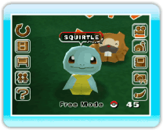
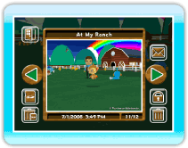

¿Qué es My Pokémon Ranch?
Es un lugar donde los Pokémon y Miis pueden interactuar
usando la consola Wii.
En el juego, el Mii del jugador comparte su tiempo en la granja con
los Pokémon.
Puedes disfrutar de la tranquila vida de la granja y observar a los
Pokémon que hay en ella, tomar fotos y enviarlas a tus amigos.
Nota: Tu apodo de la consola Wii se usará para nombrar tu granja.
|  |
 |
| Puedes observar a los Pokémon que has depositado,
viviendo libres en la granja. |
Cuando tomas una foto de un Pokémon, puedes verla en el
Album (álbum). |
Hayley
 Esta es la persona que creó el sistema de
Pokémon Ranch para Wii.
Esta es la persona que creó el sistema de
Pokémon Ranch para Wii.
Es muy amiga de Bebe, creador del Pokémon Storage System (sistema de
almacenamiento Pokémon) en Pokémon Diamond y Pokémon
Pearl.
En My Pokémon Ranch, ella aparece como una guardiana que
cuida de la granja y de sus Pokémon.
Adora a los Pokémon y sueña con llenar algún día la granja con
muchos Pokémon.
La granja estará más animada
según vayas añadiendo más y más Pokémon.
Al inicio del juego, Hayley llevará un Pokémon a tu granja
cada día. Comenzarás con una granja pequeña, pero irá creciendo
según vayas añadiendo Pokémon.
Si has capturado a muchos Pokémon en Pokémon Diamond o en Pokémon
Pearl, puedes depositar numerosos Pokémon de estos juegos en tu
granja usando la Comunicación inalámbrica de Nintendo DS (→
p.11).
- En este juego, no podrás atrapar ni entrenar Pokémon,
enseñarles movimientos, luchar contra Pokémon ni intercambiar un
Pokémon con un amigo.
- En este juego se usa el calendario de la consola Wii. Si
cambias la fecha o la hora en el calendario de la consola Wii,
podría afectar al contenido del juego. Te recomendamos que no
cambies ni la fecha ni la hora de la consola Wii cuando hayas
configurado el juego.
- Debes de haber creado al menos un Mii en el Canal Mii para
poder jugar (no podrás empezar a jugar sí no tienes un Mii).